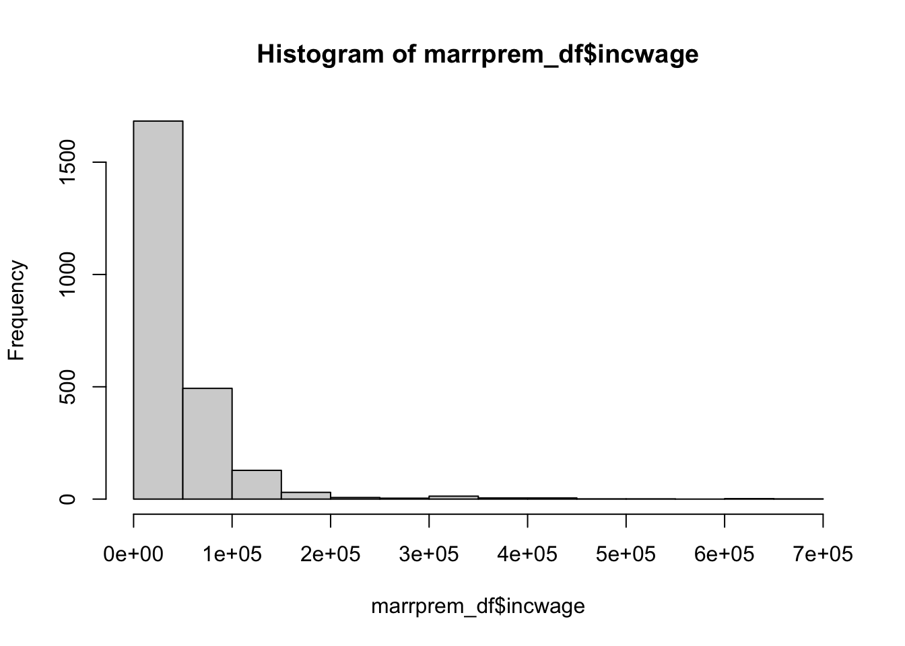
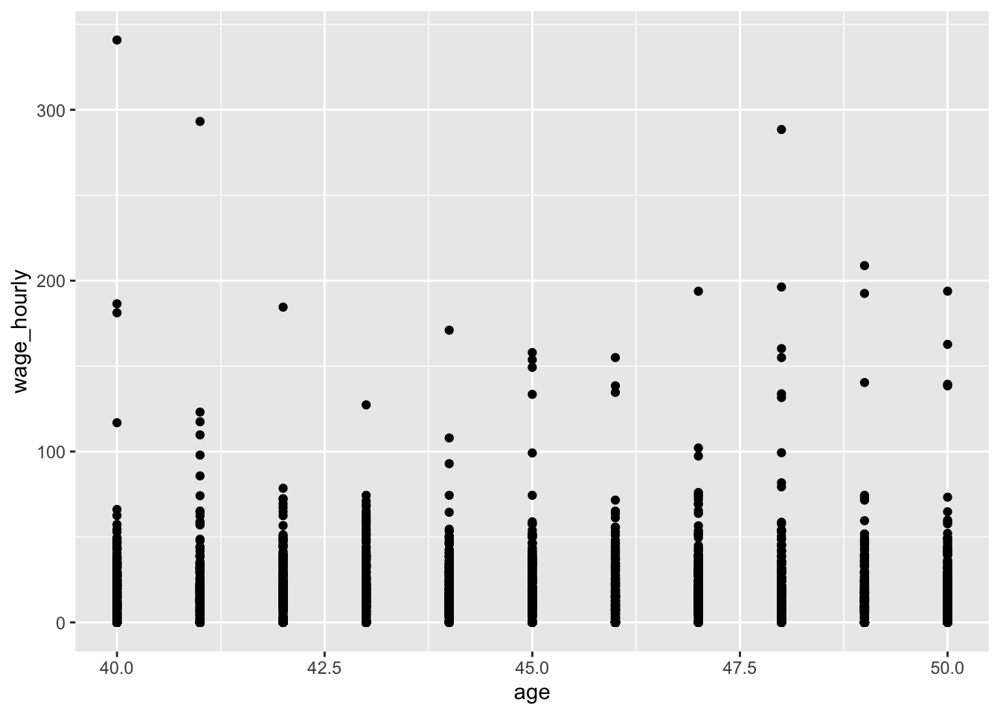

y <- 2.7
typeof(y)[1] "double"R is a programming language built specifically for statistics and data science. While it has a steeper learning curve than Stata, it shares many features in common with other programming languages and can help you learn the basics of programming. R is well suited for completing any of the problem sets that you have this quarter.
For this class (and for almost all applied economics problems), the basic workflow is to load in the data, clean it, and estimate your model’s parameters using your chosen estimator. Each section below walks you through this workflow. I have hopefully covered everything that you need to know even if you are total beginner to programming.
You can install R from here. I also recommend you use RStudio, which can be installed after installing R at the same link. However, you can use R with any IDE (integrated development environment), such as Visual Studio Code. I will be assuming that you are using R Studio for this tutorial If you have any troubles installing R, I’m more than happy to debug during office hours.
Once you open RStudio, you can see that there are multiple panes. The top left will often be for writing code1. The bottom left is your console, which is where your code will run. The top right is your environment, which will contain all of your variables and data that you are working with. Finally, the bottom right frame contains useful things you might use while coding, such as navigating your files, seeing your plots, or getting help on a function.
To start, I recommend using a script to code. If you click on the paper with the plus in the top left corner (or File > New File > R Script), you will open a new script. This is where you can write all of your code for a problem. When you hit the “source” button, it will run the script from start to finish. You can also execute chunks of code by highlighting them and hitting “Run.” I recommend having a single script for each problem.
When you get more comfortable with R, you may prefer using a notebook or Quarto Document. These allow you to write some text and execute blocks of code rather than have a single long script. For example, this document was made as a Quarto Document.
In R, you save values with a specific type to variables and then modify them with functions. Types define what is contained in the variable (e.g., integers, strings, lists, etc.). There are a lot of different types, and we will walk through some of the most important ones in this document.
To save a value to a variable, you assign (<-, an arrow pointing to the variable) a variable name a value:
y <- 2.7
typeof(y)[1] "double"Here, you can see I assigned the variable y the value of 2.7 and its type is double.
Functions are also a type which takes an input and returns an output:
round(y)[1] 3Here the function round() has an input of y and outputs y rounded down to 2. This function does not change y itself but outputs a new value. However, some functions will modify the input itself, so make sure you know what it does. You can also save the output over the existing variable or create a new variable:
x <- round(y)
y <- round(y)To see what a function does, you can either look it up online, or RStudio has a help pane on the right side. Type the function into the search bar just below the help tab, and it will provide you with useful information about the function.
Other people often write useful types and functions that will make your life easier. They share these in “packages,” which you can download to use their functions. To install packages,
install.packages("tidyverse")
install.packages("stargazer")You only need to run this once and it will save the package on your computer. However, you need to load the package before you can use it, generally at the start of each script:
library(tidyverse)Warning: package 'dplyr' was built under R version 4.2.3── Attaching core tidyverse packages ──────────────────────── tidyverse 2.0.0 ──
✔ dplyr 1.1.4 ✔ readr 2.1.4
✔ forcats 1.0.0 ✔ stringr 1.5.0
✔ ggplot2 3.4.2 ✔ tibble 3.2.1
✔ lubridate 1.9.2 ✔ tidyr 1.3.0
✔ purrr 1.0.1
── Conflicts ────────────────────────────────────────── tidyverse_conflicts() ──
✖ dplyr::filter() masks stats::filter()
✖ dplyr::lag() masks stats::lag()
ℹ Use the conflicted package (<http://conflicted.r-lib.org/>) to force all conflicts to become errorslibrary(stargazer)
Please cite as:
Hlavac, Marek (2022). stargazer: Well-Formatted Regression and Summary Statistics Tables.
R package version 5.2.3. https://CRAN.R-project.org/package=stargazer Tidyverse and stargazer are two packages that you will likely use a lot in this class. Tidyverse contains many useful functions for working with data, while stargazer helps print out regression results.
Before we load data, it’s best to clear any previous data we may have had in a previous session:
rm(list = ls())
# rm stands for "remove."
# list tells rm() that you want to remove a list of objects.
# ls() is the list of all objects currently in your environment.
# It also removes packages, so let's re-load them.
library(tidyverse)
library(stargazer)You first need to navigate to the folder containing your data and load your required packages. R has a “working directory,” which is the current folder that it is executing your code in. To see your working directory,
getwd()which stands for “get working directory.” You can also set the working directory to something else:
setwd("path/to/folder")Now to load the data. Tidyverse, the package we loaded earlier, has the function read_csv()2:
# If you are in the directory, you can just list the file name. Otherwise, you have to list the full path or the path from the working directory to the file.
marrprem_df <- read_csv("data/MarrPrem_small.csv")Rows: 2373 Columns: 33
── Column specification ────────────────────────────────────────────────────────
Delimiter: ","
chr (16): statefip, nchild, sex, marst, race, raced, hispan, hispand, educ, ...
dbl (17): serial, age, uhrswork, incwage, married, White, Black, Hispanic, A...
ℹ Use `spec()` to retrieve the full column specification for this data.
ℹ Specify the column types or set `show_col_types = FALSE` to quiet this message.class(marrprem_df)[1] "spec_tbl_df" "tbl_df" "tbl" "data.frame" This will load the data in MarrPrem_small.csv and assign it to data. You can click on data in the Environment pane to open up the values in a separate tab, or type in the Console View(data).
Cleaning data is often where the most mistakes creep in. It’s easy to misunderstand the structure of the data or misunderstand what your code is actually doing.
Dplyr is a intuitive way to clean data. It involves chaining steps together to clean a data frame. The basic format is
cleaned_data <- raw_data |>
cleaning_function(colname) |>
cleaning_function2(colname2, colname3)As we’ve seen, cleaned_data is the final output. raw_data is what you start with. The operator |> means to send the output to the next function call as the first argument of the function. In this case, raw_data is sent to cleaning_function() which is then sent to cleaning_function2(). Often, the cleaning functions directly use the column name as input and implicitly knows how to work with the data frame. Here are some common commands you might use:
mutate() # adds new variables that are functions of existing variables
mutate(log_wage = log(wage))
select() # keeps or drops variables based on their names
select(log_wage) keeps, select(-wage) drops
filter() # keeps observations based on specified conditions
filter(log_wage > 0)
arrange() # sort the data frame
arrange(log_wage)
inner_join() # Join to another data frame. Also left, right, etc.
inner_join(asset_df, by = "id")
group_by() # groups observations for future mutations
group_by(educ_cat)
summarize() # collapse data to summary stats
summarize(mean_wage = mean(wage))Here are some steps to make sure that data cleaning runs smoothly.
The data are often going to be different than you expect. Here’s some ways to examine the data:
glimpse(marrprem_df)Rows: 2,373
Columns: 33
$ serial <dbl> 3715910, 5993451, 5991943, 3948575, 116010, 6323033, 549875…
$ statefip <chr> "New Jersey", "Utah", "Utah", "New York", "Alaska", "Washin…
$ nchild <chr> "2", "0 children present", "0 children present", "0 childre…
$ age <dbl> 42, 48, 46, 46, 41, 48, 44, 43, 49, 43, 43, 48, 46, 45, 46,…
$ sex <chr> "Female", "Female", "Male", "Male", "Male", "Female", "Male…
$ marst <chr> "Married, spouse present", "Never married/single", "Divorce…
$ race <chr> "White", "Other Asian or Pacific Islander", "White", "Black…
$ raced <chr> "White", "Vietnamese", "White", "Black/Negro", "White", "Wh…
$ hispan <chr> "Not Hispanic", "Not Hispanic", "Mexican", "Not Hispanic", …
$ hispand <chr> "Not Hispanic", "Not Hispanic", "Mexican", "Not Hispanic", …
$ educ <chr> "Grade 12", "Grade 12", "Grade 12", "4 years of college", "…
$ educd <chr> "Regular high school diploma", "Regular high school diploma…
$ empstat <chr> "Not in labor force", "Not in labor force", "Employed", "Em…
$ empstatd <chr> "Not in Labor Force", "Not in Labor Force", "At work", "At …
$ uhrswork <dbl> 0, 0, 40, 40, 40, 50, 40, 40, 40, 40, 40, 32, 60, 0, 0, 0, …
$ incwage <dbl> 0, 0, 31396, 91476, 3368, 47973, 52665, 24139, 82329, 9200,…
$ MARST_MOM <chr> NA, NA, "Married, spouse present", NA, NA, NA, NA, NA, NA, …
$ MARST_POP <chr> NA, "Widowed", "Married, spouse present", NA, NA, NA, NA, N…
$ married <dbl> 1, 0, 0, 0, 0, 0, 1, 1, 0, 1, 0, 1, 1, 1, 1, 1, 0, 0, 0, 1,…
$ race_cat <chr> "White", "Asian", "Hispanic", "Black", "White", "White", "H…
$ White <dbl> 1, 0, 1, 0, 1, 1, 1, 1, 1, 1, 1, 0, 0, 0, 1, 0, 0, 0, 1, 0,…
$ Black <dbl> 0, 0, 0, 1, 0, 0, 0, 0, 0, 0, 0, 0, 0, 0, 0, 0, 0, 0, 0, 0,…
$ Hispanic <dbl> 0, 0, 0, 0, 0, 0, 0, 0, 0, 0, 0, 0, 1, 0, 0, 0, 0, 0, 0, 0,…
$ Asian <dbl> 0, 0, 0, 0, 0, 0, 0, 0, 0, 0, 0, 0, 0, 0, 0, 0, 0, 1, 0, 0,…
$ Other <dbl> 0, 0, 0, 0, 0, 0, 0, 0, 0, 0, 0, 0, 0, 0, 0, 0, 0, 0, 0, 0,…
$ educ_cat <chr> "HS diploma/some college", "HS diploma/some college", "HS d…
$ lessHS <dbl> 0, 0, 0, 0, 0, 0, 0, 0, 0, 0, 0, 0, 0, 0, 0, 0, 1, 0, 0, 0,…
$ HS <dbl> 1, 1, 1, 0, 1, 1, 1, 1, 0, 1, 1, 0, 1, 0, 1, 1, 0, 1, 1, 1,…
$ Coll <dbl> 0, 0, 0, 1, 0, 0, 0, 0, 1, 0, 0, 1, 0, 1, 0, 0, 0, 0, 0, 0,…
$ NoWork2012 <dbl> 1, 1, 0, 0, 1, 0, 0, 0, 0, 0, 1, 0, 0, 1, 1, 1, 0, 1, 0, 0,…
$ NoWork2011 <dbl> 1, 1, 0, 0, 0, 0, 0, 0, 0, 0, 0, 0, 0, 1, 1, 1, 0, 1, 1, 1,…
$ uhrsday <dbl> 0.0, 0.0, 8.0, 8.0, 8.0, 10.0, 8.0, 8.0, 8.0, 8.0, 8.0, 6.4…
$ parent <dbl> 1, 0, 0, 0, 0, 1, 1, 1, 0, 1, 0, 1, 1, 1, 1, 1, 1, 0, 0, 1,…summary(marrprem_df) serial statefip nchild age
Min. : 7796 Length:2373 Length:2373 Min. :40.00
1st Qu.:1660301 Class :character Class :character 1st Qu.:43.00
Median :3278434 Mode :character Mode :character Median :45.00
Mean :3277599 Mean :45.23
3rd Qu.:4929442 3rd Qu.:48.00
Max. :6544300 Max. :50.00
sex marst race raced
Length:2373 Length:2373 Length:2373 Length:2373
Class :character Class :character Class :character Class :character
Mode :character Mode :character Mode :character Mode :character
hispan hispand educ educd
Length:2373 Length:2373 Length:2373 Length:2373
Class :character Class :character Class :character Class :character
Mode :character Mode :character Mode :character Mode :character
empstat empstatd uhrswork incwage
Length:2373 Length:2373 Min. : 0.00 Min. : 0
Class :character Class :character 1st Qu.:25.00 1st Qu.: 2552
Mode :character Mode :character Median :40.00 Median : 28764
Mean :33.42 Mean : 40697
3rd Qu.:40.00 3rd Qu.: 55705
Max. :99.00 Max. :651514
MARST_MOM MARST_POP married race_cat
Length:2373 Length:2373 Min. :0.0000 Length:2373
Class :character Class :character 1st Qu.:0.0000 Class :character
Mode :character Mode :character Median :1.0000 Mode :character
Mean :0.6258
3rd Qu.:1.0000
Max. :1.0000
White Black Hispanic Asian
Min. :0.000 Min. :0.0000 Min. :0.00000 Min. :0.00000
1st Qu.:1.000 1st Qu.:0.0000 1st Qu.:0.00000 1st Qu.:0.00000
Median :1.000 Median :0.0000 Median :0.00000 Median :0.00000
Mean :0.767 Mean :0.1091 Mean :0.01054 Mean :0.01475
3rd Qu.:1.000 3rd Qu.:0.0000 3rd Qu.:0.00000 3rd Qu.:0.00000
Max. :1.000 Max. :1.0000 Max. :1.00000 Max. :1.00000
Other educ_cat lessHS HS
Min. :0.000000 Length:2373 Min. :0.0000 Min. :0.0000
1st Qu.:0.000000 Class :character 1st Qu.:0.0000 1st Qu.:0.0000
Median :0.000000 Mode :character Median :0.0000 Median :1.0000
Mean :0.003371 Mean :0.1087 Mean :0.6001
3rd Qu.:0.000000 3rd Qu.:0.0000 3rd Qu.:1.0000
Max. :1.000000 Max. :1.0000 Max. :1.0000
Coll NoWork2012 NoWork2011 uhrsday
Min. :0.0000 Min. :0.0000 Min. :0.0000 Min. : 0.000
1st Qu.:0.0000 1st Qu.:0.0000 1st Qu.:0.0000 1st Qu.: 5.000
Median :0.0000 Median :0.0000 Median :0.0000 Median : 8.000
Mean :0.2912 Mean :0.2326 Mean :0.2284 Mean : 6.685
3rd Qu.:1.0000 3rd Qu.:0.0000 3rd Qu.:0.0000 3rd Qu.: 8.000
Max. :1.0000 Max. :1.0000 Max. :1.0000 Max. :19.800
parent
Min. :0.000
1st Qu.:0.000
Median :1.000
Mean :0.582
3rd Qu.:1.000
Max. :1.000 Let’s check out frequencies for one of the character variables:
# The dollar sign lets you pick out specific columns from a data frame
table(marrprem_df$race)
American Indian or Alaska Native Black/Negro
25 259
Chinese Japanese
35 8
Other Asian or Pacific Islander Other race, nec
75 99
Three or more major races Two major races
6 46
White
1820 # Or if you want percentages rather than frequencies
prop.table(table(marrprem_df$race))
American Indian or Alaska Native Black/Negro
0.010535188 0.109144543
Chinese Japanese
0.014749263 0.003371260
Other Asian or Pacific Islander Other race, nec
0.031605563 0.041719343
Three or more major races Two major races
0.002528445 0.019384745
White
0.766961652 It matches up with the race dummy variables. If you want to visualize continuous variables,
hist(marrprem_df$incwage)
This will help you think through what you want to do before you implement the code. It helps you not waste time coding something that you end up not needing in the end.
Using a simple wrong example, suppose that we want the hourly wage. Maybe you do
marrprem_cleaned <- marrprem_df |>
mutate(wage_hourly = incwage / uhrswork)You would think that most hourly wages should be between 0 and 100. Let’s check:
summary(marrprem_cleaned$wage_hourly) Min. 1st Qu. Median Mean 3rd Qu. Max. NA's
0.0 485.5 894.2 1188.5 1519.8 17724.0 431 Clearly wrong! uhrswork is actually hours worked per week. We can instead approximate the hourly wage using
marrprem_cleaned <- marrprem_df |>
mutate(wage_hourly = incwage / (52 * uhrswork))
summary(marrprem_cleaned$wage_hourly) Min. 1st Qu. Median Mean 3rd Qu. Max. NA's
0.000 9.338 17.197 22.857 29.227 340.846 431 Much better. You can also see that there are some missings. These are people who had zero hours worked. We may want to check that they have zero income wage:
# the max wage of those with zero work hours should also be zero.
marrprem_df |>
filter(uhrswork == 0) |>
select(incwage) |>
summarize(incwage_max = max(incwage))# A tibble: 1 × 1
incwage_max
<dbl>
1 0So those people have zero income as we expect. Let’s set their hourly wage to zero:
marrprem_cleaned <- marrprem_cleaned |>
mutate(wage_hourly = ifelse(is.na(wage_hourly), 0, wage_hourly))
summary(marrprem_cleaned$wage_hourly) Min. 1st Qu. Median Mean 3rd Qu. Max.
0.000 1.923 13.740 18.705 25.320 340.846 We can create a nice summary statistics table with Stargazer:
summ_cols <- c("wage_hourly", "age", "married", "White", "Black")
# You can use df[i,j] to select row i and column(s) j of a data frame
# as.data.frame() converts our data to an explicit data.frame, which is needed for stargazer
stargazer(as.data.frame(marrprem_cleaned[,summ_cols]), type = "text")
===============================================
Statistic N Mean St. Dev. Min Max
-----------------------------------------------
wage_hourly 2,373 18.705 24.801 0.000 340.846
age 2,373 45.231 3.187 40 50
married 2,373 0.626 0.484 0 1
White 2,373 0.767 0.423 0 1
Black 2,373 0.109 0.312 0 1
-----------------------------------------------There are many packages that implement the econometrics that we will talk about this quarter. They often involve a formula (roughly your model) and the data, with some other options. Let’s implement OLS:
# ~ is the "equals" sign of a formula. We are regression hourly wage on demographics
simple_ols_form <- wage_hourly ~ age + White + Black + married
simple_ols <- lm(simple_ols_form, marrprem_cleaned)
summary(simple_ols)
Call:
lm(formula = simple_ols_form, data = marrprem_cleaned)
Residuals:
Min 1Q Median 3Q Max
-23.27 -14.20 -4.97 6.81 317.57
Coefficients:
Estimate Std. Error t value Pr(>|t|)
(Intercept) 23.9631 7.2586 3.301 0.000977 ***
age -0.2503 0.1582 -1.582 0.113740
White 2.6241 1.5432 1.700 0.089190 .
Black -1.2958 2.1131 -0.613 0.539795
married 6.6962 1.0635 6.296 3.62e-10 ***
---
Signif. codes: 0 '***' 0.001 '**' 0.01 '*' 0.05 '.' 0.1 ' ' 1
Residual standard error: 24.53 on 2368 degrees of freedom
Multiple R-squared: 0.02363, Adjusted R-squared: 0.02198
F-statistic: 14.33 on 4 and 2368 DF, p-value: 1.469e-11lm() estimates the model and summary() shows the typical regression output you saw from Econ 102B. We can estimate more models:
# factor() turns a character variable into a dummies.
factor_form <- wage_hourly ~ age + White + Black + married + factor(sex)
factor_ols <- lm(factor_form, marrprem_cleaned)
summary(factor_ols)
Call:
lm(formula = factor_form, data = marrprem_cleaned)
Residuals:
Min 1Q Median 3Q Max
-27.803 -13.761 -4.732 6.598 313.043
Coefficients:
Estimate Std. Error t value Pr(>|t|)
(Intercept) 16.9284 7.1663 2.362 0.0182 *
age -0.1955 0.1554 -1.258 0.2086
White 2.4018 1.5155 1.585 0.1131
Black -0.7607 2.0757 -0.366 0.7140
married 6.9404 1.0446 6.644 3.77e-11 ***
factor(sex)Male 9.3522 0.9914 9.433 < 2e-16 ***
---
Signif. codes: 0 '***' 0.001 '**' 0.01 '*' 0.05 '.' 0.1 ' ' 1
Residual standard error: 24.08 on 2367 degrees of freedom
Multiple R-squared: 0.059, Adjusted R-squared: 0.05702
F-statistic: 29.68 on 5 and 2367 DF, p-value: < 2.2e-16We can combine outputs into one table with stargazer:
stargazer(simple_ols, factor_ols, type = "text")
=====================================================================
Dependent variable:
-------------------------------------------------
wage_hourly
(1) (2)
---------------------------------------------------------------------
age -0.250 -0.195
(0.158) (0.155)
White 2.624* 2.402
(1.543) (1.516)
Black -1.296 -0.761
(2.113) (2.076)
married 6.696*** 6.940***
(1.063) (1.045)
factor(sex)Male 9.352***
(0.991)
Constant 23.963*** 16.928**
(7.259) (7.166)
---------------------------------------------------------------------
Observations 2,373 2,373
R2 0.024 0.059
Adjusted R2 0.022 0.057
Residual Std. Error 24.527 (df = 2368) 24.083 (df = 2367)
F Statistic 14.326*** (df = 4; 2368) 29.684*** (df = 5; 2367)
=====================================================================
Note: *p<0.1; **p<0.05; ***p<0.01Finally, we can choose to save it by filling in a file path to the out option:
stargazer(simple_ols, factor_ols, type = "latex", out = "ols_table.tex")
% Table created by stargazer v.5.2.3 by Marek Hlavac, Social Policy Institute. E-mail: marek.hlavac at gmail.com
% Date and time: Sat, Oct 18, 2025 - 22:06:26
\begin{table}[!htbp] \centering
\caption{}
\label{}
\begin{tabular}{@{\extracolsep{5pt}}lcc}
\\[-1.8ex]\hline
\hline \\[-1.8ex]
& \multicolumn{2}{c}{\textit{Dependent variable:}} \\
\cline{2-3}
\\[-1.8ex] & \multicolumn{2}{c}{wage\_hourly} \\
\\[-1.8ex] & (1) & (2)\\
\hline \\[-1.8ex]
age & $-$0.250 & $-$0.195 \\
& (0.158) & (0.155) \\
& & \\
White & 2.624$^{*}$ & 2.402 \\
& (1.543) & (1.516) \\
& & \\
Black & $-$1.296 & $-$0.761 \\
& (2.113) & (2.076) \\
& & \\
married & 6.696$^{***}$ & 6.940$^{***}$ \\
& (1.063) & (1.045) \\
& & \\
factor(sex)Male & & 9.352$^{***}$ \\
& & (0.991) \\
& & \\
Constant & 23.963$^{***}$ & 16.928$^{**}$ \\
& (7.259) & (7.166) \\
& & \\
\hline \\[-1.8ex]
Observations & 2,373 & 2,373 \\
R$^{2}$ & 0.024 & 0.059 \\
Adjusted R$^{2}$ & 0.022 & 0.057 \\
Residual Std. Error & 24.527 (df = 2368) & 24.083 (df = 2367) \\
F Statistic & 14.326$^{***}$ (df = 4; 2368) & 29.684$^{***}$ (df = 5; 2367) \\
\hline
\hline \\[-1.8ex]
\textit{Note:} & \multicolumn{2}{r}{$^{*}$p$<$0.1; $^{**}$p$<$0.05; $^{***}$p$<$0.01} \\
\end{tabular}
\end{table} If you want some more details on Stargazer, you can look here.
You won’t have to do too many plots for this class, but ggplot is the commonly chosen method for plotting. It involves telling ggplot how your data maps into plot features and then specifying “geometries,” or the objects on your plot. For example, to create a scatter plot, you do
ggplot(marrprem_cleaned, aes(x = age, y = wage_hourly)) + geom_point()
If you want more information on ggplot and its functionality, see here.
That’s the basics! This should give you the foundation you need to complete the problem sets in this course. You will have to look up more packages as we learn new econometric techniques. I recommend looking first at this site for the packages they use for the topics we cover.
If you have any questions while doing the problem sets, don’t hesitate to drop by office hours!
Comments
Comments help you (and me as a TA) follow the reasons why you code something in a particular way. You can type comments with
#at the start of the lineIt’s often most useful to use comments in places where, reading the code, someone might have questions about what you are doing or why you are doing it. You can also use certain conventions to label sections:
If your code is clear from the variables and functions you have written, no need to leave a comment!